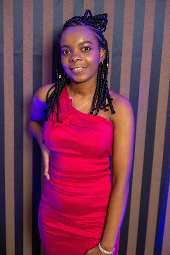

Sadiana
Paula
Sou uma pessoa muito determinada e positiva. A terceira irmã de quatro filhos (1 menino e duas meninas), com quem moro junto a minha mãe no bairro Azenha; temos um relacionamento muito bom e sempre é muito bom estar com eles. Concluí o ensino médio na ano passado (Colégio Protásio Alves). No meu tempo de lazer gosto de ler, ver filmes (drama, romance e suspense) ou praticar exercício físico. Meus pontos de melhoria são a ansiedade e a procrastinação.
